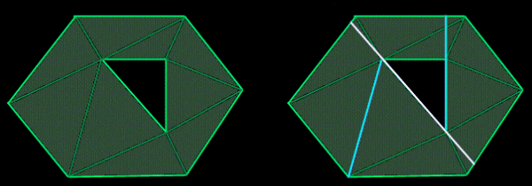

|
 |
|
 |
| |
I am writing an octree-based 3D engine. For calculating the visible set
of polygons, I use a c-buffer based algorithm. It works as follows: Each
octree node's bounding box that is in the frustum is tested against a
c-buffer, in front-to-back order. If this node contains triangles, the
triangles are sent to the rendering stage, and a simplified model of the
triangles in the node are sent to the c-buffer, so this node can occlude
other nodes. Rendering all the triangles is no problem for the modern
T&L enabled 3D hardware, but it is a burden for the software transform
and span generation in the c-buffer section (I'm targetting >50k
triangles/frame). This is why I need a simplified version of the
geometry.
But the simplified geometry needs a property which none of the
algorithms I have searched for can assure me: the silhouette seen from
any possible direction of the simplified data must be as large or
smaller than the silhouette seen from the original data. If this is not
the case, the simplified geometry rendered into the c-buffer might
occlude triangles which would be visible when the original geometry was
rendered into the c-buffer.
Do you know how I can simplify my geometry and fullfilling the described
property?
|
|
 |
|
 |
 |
|
|
| |
Try this...
Warning: I'm making this up as I go along... so decide for yourself how valid
you think this answer is. :)
First, pre-calculate the convex hull of the object. This is guaranteed to
completely enclose your object. Ideally, you want to test the silhouette of the
convex hull against your c-buffer. Because it's a silhouette of a convex hull,
your silhouette ends up being a single convex polygon.
During runtime, you can quickly determine the silhouette of the convex hull when
you perform back-face culling; any edge that separates a front-face polygon and
a back-face polygon is an edge from the silhouette. Once you have a list of
edges, project them and sort them in order of top-to-bottom (in screen space).
If you're not familiar with convex polygon rendering, check out this article.
This isn't the best-case scenario, because objects with large holes in them
(such as a scene full of hula-hoops) would end up with poor visibility results
since the convex hull would completely encompass the object and the hole. For
complex objects that suffer from this case, you can create a series of smaller
convex hulls that better approximate the object.
To do this, visit each polygon in the object, and split the object on that
polygon. Each time you find a split, keep track of the total surface area of all
polygons on each half of the object. You'll want to find the polygon that splits
the object into two equally sized pieces (or as close to this as possible.)
Recursively repeat this process on both pieces, choosing a polygon from each
piece that results in the best split.

Figure 1: In the [poorly drawn] example on the left, you see an object with a
hole. The silhouette is highlighted. The first edge is located that splits the
objects (as closely as possible) into two equally sized pieces. You can see this
split on the right, indicated by the white line. From those two remaining pieces
(on either side of the white line) you see two cyan lines, which were used to
split each sub-object. Referring back to the object on the left, you will notice
that each split takes place along an existing edge. This extends perfectly into
three-dimensions using polygons instead of edges.
If you continue to do this recursively, you'll eventually reach a point where
there are no concave pieces, because a completely convex object will not split
on any of its polygons. In other words, you've generated a set of completely
convex objects that, when combined, form your complex object.) From these, you
can determine a set of convex hulls that define your object precisely. You can
use these convex hulls to determine the visibility of your object, while using
the original object geometry to render.
You may find that in many cases, your set of convex hulls will eventually end up
with just as many (if not more) polygons than your original object. This is
where visibility conservation comes into play. During the recursive subdivision
process, you may decide to stop splitting, if your ratio of the total surface
area from one side to the other reaches 10% or lower. For example, the best
split results in only 10% of the total surface area on one side, and 90% on the
other side. If you play with this, you may find a good threshold.
You may find better results if your threshold is based on the total number of
polygons needed to represent the set of convex hulls. For example, a 400-polygon
model may be represented by 30 convex hulls (consisting of ~400 polygons total)
for a perfect fit, but only 10 convex hulls (consisting of only 100 polygons)
for a nearly perfect fit. In this case, the ratio of object polygons (400) to
total-convex-hull polygons (100) is 4:1. Play with this threshold, and you may
find good results.
Don't be afraid to explore other avenues. The first obvious choice would be a
combination of these two, with different thresholds for each. Is it possible to
dynamically choose thresholds for each object automatically? This could result
in an excellent adaptive technique making the whole process return ideal results
in every case.

Response provided by Paul Nettle
|
|
|
|
|
This article was originally an entry in flipCode's Ask Midnight, a Question and Answer column with Paul Nettle that's no longer active.
|

 Re: Ask MidNight
Re: Ask MidNight